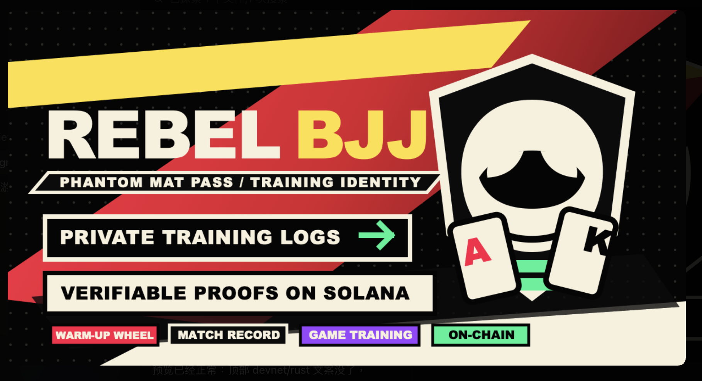
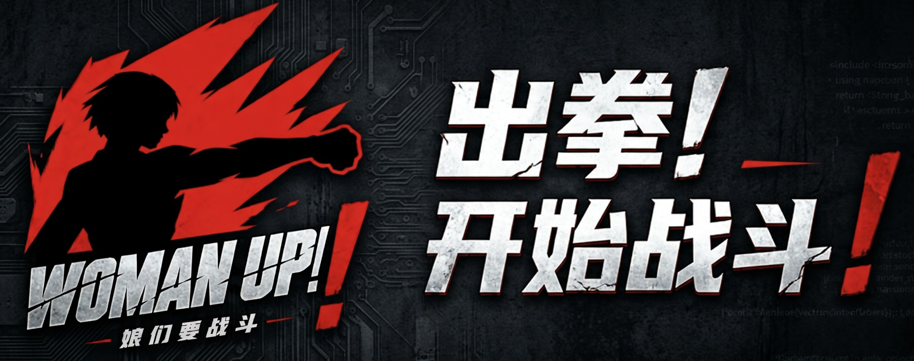
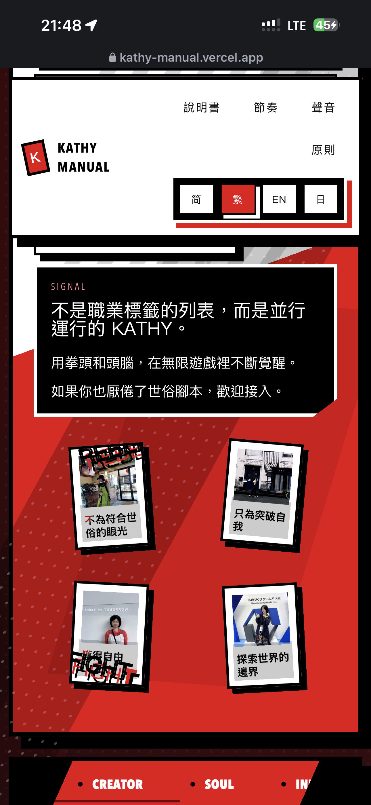
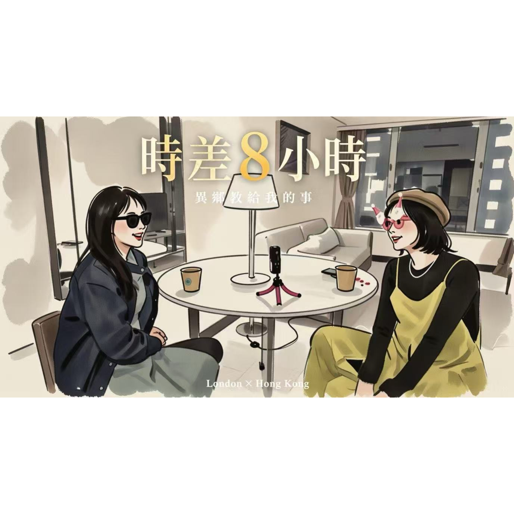

Now Playing / Infinite Game · CH.01
Kathy 的多重宇宙入口。
我是 Kathy，一个同时活在四个平行宇宙里的叛逆者。这里不是简历，也不是普通个人主页，而是我如何运行、如何切换、如何在无限游戏里继续玩的入口。
我不相信单一频道的人生。我拒绝被“一份工作、一个身份、一个标签”定义。
System 1
热血泰拳、巴西柔术与《时差 8 个钟》的声音现场。
System 2
机床贸易创业与跨境金融理财的现实引擎。
FIGHTER
BUILDER
CREATOR
SOUL
INFINITE GAME
时差 8 个钟
MULTIVERSE
REBEL
FIGHTER
BUILDER
CREATOR
SOUL
INFINITE GAME
时差 8 个钟
MULTIVERSE
REBEL
Breath Timer
5 秒呼吸激活
准备开始
放下手机，深呼吸。5 秒钟，让身体回到当下。热血宇宙的入口，不在拳套里，在你的大脑里。
Systems Grid
我的四个宇宙
💹System 2 · Strategist Mode
跨境金融理财顾问
2014 年起入行，十年跨境金融实战。帮高净值家庭在多市场之间配置资产。
进入金融宇宙 ↗
⚙️System 2 · Builder Mode
机床贸易创业者
2019 年至今，深耕工业机床跨境贸易，也持续发掘机械制造行业里优秀的女性，一起交流、合作、创造更大价值。
访问公司主页 ↗
🥊System 1 · Fighter Mode
泰拳 × 巴西柔术
在擂台上学会的不是赢，是被打倒后还能站起来。背着电脑和拳套四处游历，不为符合任何审美，只为突破自我，获得自由。
走进擂台 ↗
🎙️System 1 · Creator Mode
播客主理人
《时差 8 个钟》连接香港与伦敦，聊成长、异乡、漂泊与探索。时差不是距离，而是两种人生在同一通话里碰撞的火花。
听一集播客 ↗
切换不是分裂
并行不是冲突
完整不止一种样子
第五个宇宙
💻 黑客松玩家

1️⃣独立开发「Rebel BJJ」
为女性柔术练习者打造的 AI + Web3 训练地图
🏆 Dev3pack 全球黑客松中国区第 4 名
查看 Rebel BJJ 项目 ↗

2️⃣全栈开发「Woman Up」
格斗科普+生存技能科普+双人游戏，让小事堆积前被接住
🏆 她启 Z-Heronix黑客松观众人气奖
查看 Woman Up 项目 ↗
🏆3️⃣ HERSTORY
FemAI 1.0 最佳实践奖

Track A • Awarded to Kathy • April 27, 2026
Podcast
《时差 8 个钟》不是栏目摆设，而是我和世界对话的一条声波通道。
香港 × 伦敦，两位女生的对谈录。时差不是距离，是两种人生在同一通话里碰撞出来的火花。
Transcript / Draft
《时差8个钟》
香港 × 伦敦 · 两位女生的对谈录
时差不是距离，是两种人生在同一通话里碰撞的火花。

EP01 · 异乡教给我的事
Spotify / 32:08
收听第一集 ↗
Manifesto
有限游戏的人为赢而玩，无限游戏的人为继续玩而玩。
Status: Not Seeking a Job / Seeking: Soul Resonance
我在找的是 Deep Connection，不是世俗脚本。
简历是给操作者看的，连接是给同频共振的灵魂留的。我希望寻找更多拒绝被世俗脚本定义的人。
技术是语言，格斗是底色，深度连接是目标。
我厌倦逻辑谬誤堆砌的社交，也無意參與無聊博弈。我配置這套系統，是為了過濾噪音，精準定位那 1% 的有趣人類。
我習慣用「配置者思維」解構世界。
無論是巴西柔術的攻防轉換，還是 AI 世界的邏輯架構，在我的系統裡，標籤只是低效率的分類工具。
自由是連接的前提。
如果你懂底層邏輯優於重複操作，如果你追求高密度資訊交換，如果你也相信自由才是連接前提，那這頁就是寫給你的。
我們能否進行一場邏輯對齊的深度對話（Deep Talk）？
我們能否在社交噪音之外，建立一種非對稱的、高頻的能量共鳴？
01 · 共振
02 · 共赢
03 · 合作
04 · 解鎖更多有趣的人生玩法
04並行宇宙
∞無限遊戲
08Hours Apart